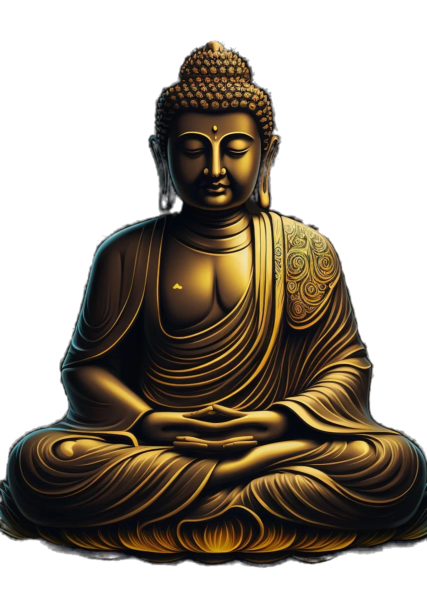

Religión
Buda Gautama en las religiones del mundo
En general, junto con otros reformadores religiosos, el Buda fue y es considerado una de las figuras más importantes de la historia religiosa. Si bien es la figura central del budismo, no es exclusiva de él.

- Algunos hinduistas consideran al Buda Gautama como un avatar del dios Visnú.
- El santo cristiano Josafat se basa en la vida del Buda Guatama.
- El Buda es considerado como un profeta por los musulmanes de la comunidad ahmadía
- Algunos chinos del taoísmo-budismo temprano pensaron que el Buda era una reencarnación de Lao-Tsé
- El maniqueísmo lo incluía entre los predecesores de Mani al lado de Moisés, Jesús y Zoroastro
- El caodaísmo considera uno de los mesías de Dios, junto a Lao-Tsé y Cristo.
- Como una manifestación de Dios en la fe Bahá'í
- La teosofía, como otras escuelas esotéricas, consideran al Buda uno de los mayores iluminados.
- Los raelianos lo consideran uno de los clones extraterrestres destinados a guiar a la humanidad.[
Tres religiones que siguen las enseñanzas de Buda (Siddhartha Gautama)
| Budismo Theravada |
Budismo Mahayana |
Budismo Vajrayana |
| Tailandia, Sir Lanka |
Japon, Corea |
Tíbet, Nepal |
| Laos y Birmania |
Taiwán y Vietnam |
por defecto
Bután y Mongolia |